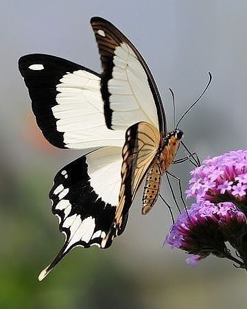

Honey bees are insects that produce and store liquefied sugar, typically known as honey.
The body of the bee is divided into legs, an antenna, a three-segment thorax, and six segments of the abdomen.
The wild, honey bees often create their hives in holes in trees and on rock crevices. Their hives are primarily made from wax, created from their abdomen, and chew flakes of the wax until they become soft. Unlike other bees; honey bees in particular do not hibernate during the cold weather/winter. Rather they remain in their hive sharing body heat and consuming stored food supplies.
Honey bees are social creatures; however, they can display in occasions aggressive Behavior within their colonies. The honey bee plays a significant role in pollination and ecology they maintain biodiversity and play a key role in the transferring of pollen grains, which results in the production of seeds.
Honey bees can produce a large amount of honey in comparison to other species of bee". Bees are protected in many states as they are considered to be essential to our nature. Sadly bees are considered to be in extinction. Beekeepers are trying to educate average people to respect and protect small contributors of nature like bees. Their absence in nature can cause major global and environmental damages.
Butterflies are insects with small bodies and large colorful wings with different patterns that makes them unique.
Butterflies do so much more than just add color to our gardens. Like bee butterflies also pollinate plants. This helps fruits and vegetables produce seeds. The presence of butterflies indicates a healthy environment, increasing biodiversity of plants animals , and micro-organisms. Butterflies also make humans happy their presence brings a sense of joy and peace. Their beauty is admirable, watching them in a home garden never fails to bring a sense of great pleasure.
The protection of bees and butterflies is among ecologists' goals. Maintaining a local pesticide-healthy agriculture can secure their ability to reproduce. Bees and Butterflies maintain our ecosystem, despite their jobs being unrecognized by many. We must provide them with a friendly habitat where they can rejoice and not be killed.